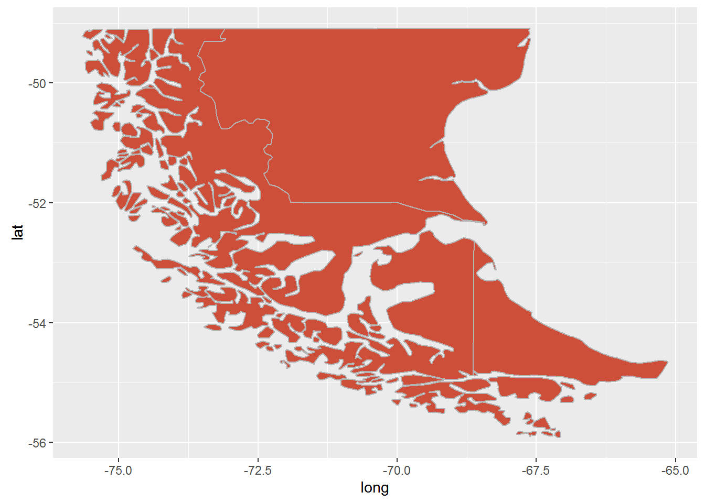
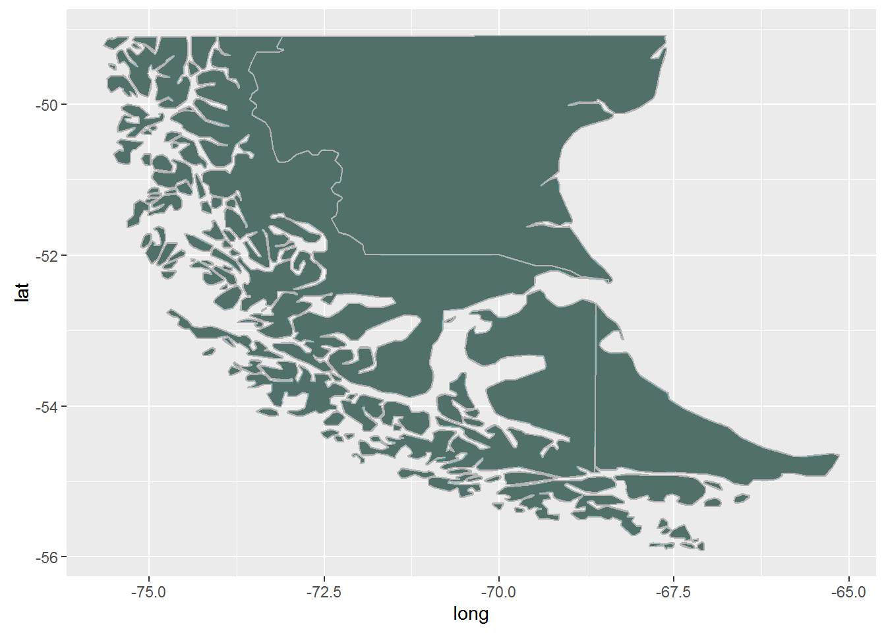
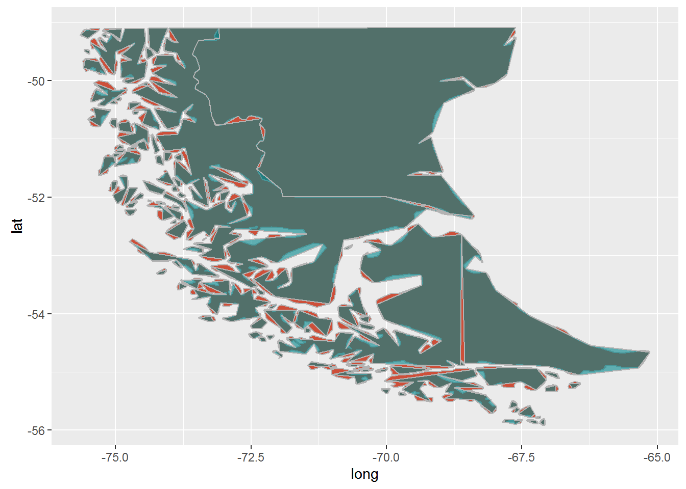
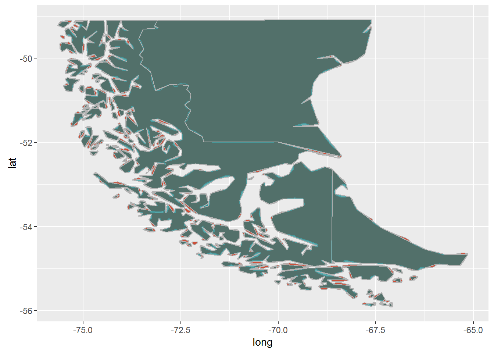
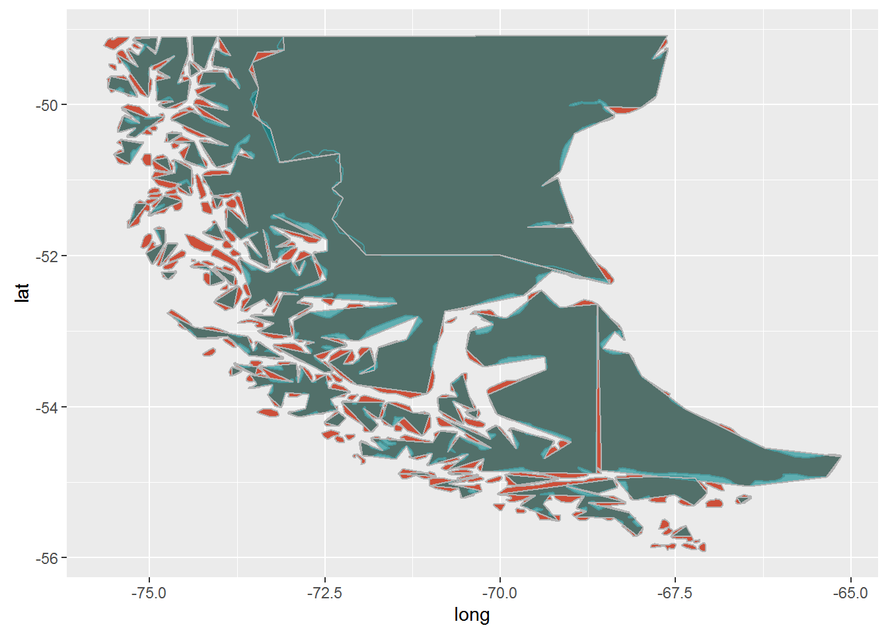

Not sure
A recent client of ours asked us to develop a mapping application using a specific shapefile of the world and all of its countries. Although the original shapefile was not super-detailed, it was detailed (i.e. large) enough that it caused extremely slow load times in the mapping app. We needed to reduce the size of the original shapefile without compromising too much detail in the polygon geometry. It was also important to us that we NOT remove smaller polygons as much as possible.
Below we’ll explore the various options for reducing spatial polygon sizes while maintaining the original geomtery as much as possible. We’ll end with an example interactive map using the highcharter library authored by Joshua Kunst.
Load the libraries
library(rgdal) # for reading shapefile
library(rgeos) # for using well known text (readWKT)
library(maptools)
library(GISTools)
library(ggplot2) # for plotting
library(DT) # for displaying interactive data tables
library(dplyr) # for data manipulation
library(highcharter) # for interactive mappingDownload & unzip the data
As mentioned above we were required to work with a specific shapefile for this project. A smaller, clipped version can be downloaded from our site and is what is used in the examples below.
url<-"http://www.zevross.com/temp/gis.zip"
downloaddir<-"D:/work_big_current/blog/r_simplify_polys"
destname<-"gis.zip"
download.file(url, destname)
unzip(destname, exdir=downloaddir, junkpaths=TRUE)Read in the data and take a quick look
This is a clipped version of the original data, the southern tip of South America. We chose this location specifically so we could compare the changes in detail of the somewhat elaborate geometry.
filename<-list.files(downloaddir, pattern=".shp", full.names=FALSE)
filename<-gsub(".shp", "", filename)
orig<-readOGR(downloaddir, filename)
## OGR data source with driver: ESRI Shapefile
## Source: "D:/work_big_current/blog/r_simplify_polys", layer: "SAsouth"
## with 2 features
## It has 10 fields
g<-ggplot() +
geom_polygon(data = orig, aes(x = long, y = lat, group = group),
fill = "tomato3", color = "gray70")
g 
Method 1: gSimplify from the rgeos library
Authors: Roger Bivand & Colin Rundel
Function simplifies the given geometry using the Douglas-Peuker algorithm. Keep in mind that gSimplify returns just the geometry, not the attributes. In order to re-assign the attribute data from your original data you’ll need to contruct a new SpatialPolygonsDataFrame. See a discussion about this here.
Using a tolerance of 0.01
simp01<-gSimplify(orig, tol = 0.01, topologyPreserve = TRUE)
g + geom_polygon(data = simp01, aes(x = long, y = lat, group = group),
fill = "turquoise4", color = "gray70", alpha= 0.6)
Using a tolerance of 0.05
simp05<-gSimplify(orig, tol = 0.05, topologyPreserve = TRUE)
g + geom_polygon(data = simp05, aes(x = long, y = lat, group = group),
fill = "turquoise4", color = "gray70", alpha= 0.6)
Using a tolerance of 0.1
simp1<-gSimplify(orig, tol = 0.1, topologyPreserve = TRUE)
g + geom_polygon(data = simp1, aes(x = long, y = lat, group = group),
fill = "turquoise4", color = "gray70", alpha= 0.6)
The visual comparison between the 3 maps is definitely useful but we’d like to also compare the number of vertices between each simplified polygon. Use fortify from the sp library to do this. Let’s also count the number of polygons remaining to make sure we didn’t lose any (or too many).
# Function for calculating the number of polygons
calcNumPolys<-function(dat){
sum(sapply(dat@polygons, function(x) length(x@Polygons)))
}
datMetrics<-data.frame(method = "Original", tolerance = NA,
numVertices = nrow(fortify(orig)),
numPolys = calcNumPolys(orig))
z<-data.frame(method = "gSimplify",
tolerance = c(0.01, 0.05, 0.1),
numVertices = c(nrow(fortify(simp01)),
nrow(fortify(simp05)), nrow(fortify(simp1))),
numPolys = c(calcNumPolys(simp01), calcNumPolys(simp05),
calcNumPolys(simp1)))
datMetrics<-bind_rows(datMetrics, z)
datatable(datMetrics)Method 2: generalize.polys from the GISTools library
This tool is authored by Chris Brundsdon and similar to gSimplify uses the Douglas-Peuker algorithm for generalizing a spatial polygon. According to the documentation “the algorithm is applied on a polygon-by-polygon, not edge-by-edge basis. Thus edges in generalised polygons may not match perfectly.”
Using a tolerance of 0.01
gen01<-generalize.polys(orig, tol = 0.01)
g + geom_polygon(data = gen01, aes(x = long, y = lat, group = group),
fill = "turquoise4", color = "gray70", alpha= 0.6)Using a tolerance of 0.05
gen05<-generalize.polys(orig, tol = 0.05)
g + geom_polygon(data = gen05, aes(x = long, y = lat, group = group),
fill = "turquoise4", color = "gray70", alpha= 0.6)
Using a tolerance of 0.1
gen1<-generalize.polys(orig, tol = 0.1)
g + geom_polygon(data = gen1, aes(x = long, y = lat, group = group),
fill = "turquoise4", color = "gray70", alpha= 0.6)
z<-data.frame(method = "generalizePolys",
tolerance = c(0.01, 0.05, 0.1),
numVertices = c(nrow(fortify(gen01)),
nrow(fortify(gen05)), nrow(fortify(gen1))),
numPolys = c(calcNumPolys(gen01), calcNumPolys(gen05),
calcNumPolys(gen1)))
datMetrics<-bind_rows(datMetrics, z)
datatable(datMetrics)Method 3: thinnedSpatialPoly from the maptools library
Using a tolerance of 0.01
thin01<-thinnedSpatialPoly(orig, tolerance = 0.01, minarea=0,
topologyPreserve = FALSE, avoidGEOS = FALSE)
g + geom_polygon(data = thin01, aes(x = long, y = lat, group = group),
fill = "turquoise4", color = "gray70", alpha= 0.6)thin05<-thinnedSpatialPoly(orig, tolerance = 0.05, minarea=0,
topologyPreserve = TRUE, avoidGEOS = FALSE)
g + geom_polygon(data = thin05, aes(x = long, y = lat, group = group),
fill = "turquoise4", color = "gray70", alpha= 0.6)
thin1<-thinnedSpatialPoly(orig, tolerance = 0.1, minarea=0,
topologyPreserve = TRUE, avoidGEOS = FALSE)
g + geom_polygon(data = thin1, aes(x = long, y = lat, group = group),
fill = "turquoise4", color = "gray70", alpha= 0.6)z<-data.frame(method = "thinSpatialPoly",
tolerance = c(0.01, 0.05, 0.1),
numVertices = c(nrow(fortify(thin01)),
nrow(fortify(thin05)), nrow(fortify(thin1))),
numPolys = c(calcNumPolys(thin01), calcNumPolys(thin05),
calcNumPolys(thin1)))
datMetrics<-bind_rows(datMetrics, z)
datatable(datMetrics)